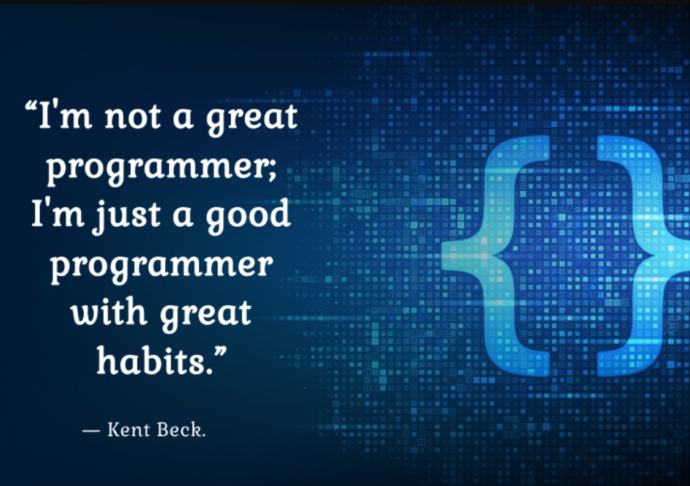

Welcome To My Website!
Discover My Projects
My Vision
My vision is to use ICT and cognitive science to create technology that's easy for people to use and enhances their lives. I want to bridge the gap between technology and human understanding, making applications that feel intuitive.
My goal is to be a part of responsible technology development, where privacy and security are priorities, and technology is a positive force for change.
Why?
I'm not just interested in ICT; I'm also fascinated by how it connects with cognitive science.
I believe that when we combine ICT with what we know about how the human mind works, we can make technology that's even better. It's not just about making technology efficient; it's about making it easy for people to use.
I think this mix of knowledge is the key to a future where technology truly makes our lives better.